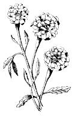
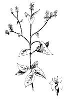
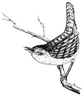
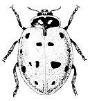
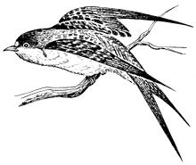
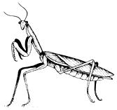

A SURE CURE AND SUDDEN DEATH FOR POTATO BUGS!
Send 25 cents to Box 007, Bunkville for full details.
Shortly before the turn of the century, advertisements similar to the above appeared in scattered news sheets. The reply was short and to the point: Find two smooth bricks. Pick one or more potato bugs from the potato patch. Place bug on one brick and smash it with the other. Since then, advertisers have gone in for more subtle chicanery . . chemical cures for all that ails the garden . . . with built-in residual problems at no extra charge.
Unfortunately, today's promoters of the "quick cure" for every gardening problem have-by the very force of their multi-million dollar advertising campaigns-collectively convinced large segments of the population that insect pests can be controlled only through the use of manufactured chemical poisons . . . and that's simply not true. You can stay ahead of harmful insects in many non-violent and nonpoisonous ways. To name only a few: companion planting and natural repellents; natural sprays and dusts; evasion and deception; intoxicants; "good" microbic agents, insect predators and parasites; birds, poultry, reptiles and small animals; and resistant varieties of plants.
Some of those gentle perfumes which drift up from the garden are noxious repellants to the insect freeloaders that zero in on the vegetable patch. So planting certain "smelly" flowers like Marigolds to stand as border guards and in ternal sentries is the first-and easiest-step in organic pest control.
French or African marigolds do an excellent job of keeping bean beetles on the other side of the fence. I find French Dwarf marigolds very effective with bush beans and beetles stay clear of my bean rows when every third plant is marigold. For larger plants which are appetizing to beetles, I use the taller African marigolds. Marigolds are also credited with destroying Verticillium wilt on potatoes and for making the soil in their root area uncomfortable for wireworms and eel worms. Yes, marigolds will do a good job in the vegetable patch.
Other flowers which make suitable garden sentinels (all terrible stinkers as far as the enemy is concerned) are asters, calendula, chrysanthemums, cosmos, geraniums, nasturtiums and tansy. Undoubtedly there are many others.
I find it handier to start my guardian flowers in flats or a row of their own and transplant them (as you do cabbage plants) to their final location in the garden. You may, however, seed such flowers directly into the vegetable patch if you prefer.
Of course, flowers are not the only repellers of garden pests. You can noticeably diminish insect attacks on your vegetable plot merely by the way you arrange it.
If you alternate a row of green beans with a row of potatoes, for instance, you will get a cooperative effect. The green beans will repel the Colorado potato beetle . . . and the potatoes will repel the Mexican bean beetle. Potatoes will also stay healthier when you plant horse radish or flax nearby for potato bugs never stay around these plants.
Tomatoes planted near asparagus, create an atmosphere inhospitable to asparagus beetles. A few plants scattered through the asparagus bed, or along the edges of the plot will do the job. We've found the early, short stalked tomatoes most suitable because we can mulch them heavily and then let them grow with no more attention. Other kinds of tomatoes will do as well, but you would either have to stake or sucker them to keep them from wandering all over the area. In any case you can use the tomatoes when they're ripe: it's the plant-not the fruit-which does the repelling. Touch a tomato vine sometime and then notice how long the scent lingers on your fingers. It's powerful stuff!
We've also found that sage planted with cabbages will repel the moth whose eggs hatch into the little green worms that gobble the cabbage before you do. Even radishes make good companions for some plants. If you drop six to eight melon or cucumber seeds into a shallow hole about the diameter of a tea cup and plant a few radish seeds around them in a slightly larger circle you'll protect the emerging melon and cucumber plants from beetle foraging. In this case, of course, you must leave the radishes in the ground so plant your table supply elsewhere.
All vegetables appear to be helped by companion planting with one or several varieties of the aromatic herbs. Chives at the feet of roses, for example, keep aphids away. Herbs such as borage, lavender, hyssop, sage, parsley, chervil, tarragon, chives, thyme, marjoram, dill, camomile, lovage and wormwood will help protect many garden plants . . . and they're good for cooking too!
Some other plants which fend off attacks on their companions include wormwood (repels flea beetles from tomatoes): basil (wards off many insects which eat tomatoes); tomatoes, mint and rosemary (repels cabbage butterfly); nasturtium seeds in squash hills (for squash pests); summer savory or potatoes (wards off Mexican bean beetles); geraniums or marigolds (repels various corn pests).
Plants which are said to be mutually beneficial are carrots and peas; celery with beans or leeks; onions and beans; radishes and Lettuce; tomatoes and parsley; turnips and peas.
Just as the marigold next door works to keep beetles out of the beans, so may a marigold spray be used for the same results. Any plant or flower which is considered a general or specific deterrent in companion can be liquified and made into a protective spray. To do this, grind whole plants to a pulp, dissolve in two to three times as much water, strain off the liquid . . . and stand by the pumps!
It is thought that injurious insects are attracted to fruit trees by an odor which eminates from the fruit-bearers themselves. A formula I have found successful in deterring tree pests is one which I learned while attending an annual convention of the Michigan Organic Gardeners. It consists of 2 gallons of kerosene-plus one bar of hard soap such as Fels Naptha-mixed in 100 gallons of water. I shave a bar of Fels Naptha soap with a paring knife and dump the shavings in a quart bottle. After filling the bottle with water, I shake it until the soap flakes are liquified.
Since I use a slide type spray gun and a bucket of solution instead of a 100-gallon barrel, my modified formula is approximately 1-1/4 ounces of kerosene and one ounce of liquid soap to a gallon of water. I spray before bloom, after petal fall, and every two or three weeks later. With peaches I stop spraying when the green fruit is the size of large olives. Some organic gardeners prefer to use corn oil emulsions, salt water or linseed oil sprays to protect their fruit trees.
A 3% solution of miscible oil available at any garden store is another relatively safe but potent weapon. A dormant spray of this oil (in late winter or early spring when the temperature is above freezing but before any buds have opened) is effective against many chewing and sucking insects such as aphids, red spiders, thrips, mealybugs, white flies, pear psylla and scale. Dormant oil spraying also covers the eggs of other insects and prevents them from hatching.
When spraying dormant oils, cover one tree at a time rather than working down a row and spraying only one side of each tree. The theory here is that with one complete spray the surplus will run off evenly, whereas row spraying creates a double cover on portions of the dried side.
If a stiff wallop is needed to knock out a heavy infestation of bugs, you can use Ryania which is the powder from ground roots of a South American plant, Ryania speciosa. Recommended dose is one ounce to two gallons of water. Rotenone and Pyrethrum also carry a lethal punch for many insects - without harming animals. Rotenone is derived from several tropical plants and can be had in pure form from pet shops and veterinarians. The commercial packages usually have rotenone mixed with other materials which are not always acceptable, however, so try to get your rotenone "straight and uncut". For best results it is necessary to repeat these sprays four or five times during the growing season.
Just as a good whiff of garlic on the breath can hold your fellow man at arm's length, a little garlic juice diluted with water and sprayed on or under fruit trees will deter some obnoxious insects. Garlic powder seems just as effective as freshly squeezed garlic juice for making such a spray.
Drs. W.R. Jenkins and R.A. Rohde of the University of Maryland discovered that asparagus was less affected by nemetodes than any other plant. Their experiments also proved that asparagus juice killed all the types of nemetodes found in Maryland when applied to the roots and sprayed on the foliage of a variety of nemetode-affected plants. The leaf spray appeared to be the more effective.
We have used milk as a spray for the tomato mosaic virus in our small greenhouse. Whole milk, dried milk, and diluted milk were all satisfactory.
Sweet pepper juice does a splendid job restraining cucumber mosaic . . . and hot pepper juice has a legion of advocates for its power to repel chewing insects. We've found hot pepper juice diluted with 4 to 6 parts water - with a little liquid soap added for coating and binding - does a grand job on cabbage worms.
Green onion juice diluted with equal parts of water and squirted on roses will clean aphids from the stems. Dousing the rose plants no more than three successive days does the trick.
For fighting spider mites on our several apple trees we use a formula developed by Dr. G. Edward Marshall of Purdue University. It is a mixture of 20 pounds of wheat flour and two quarts of buttermilk stirred into slop and added to 100 gallons of water. For our limited needs I reduced the proportion to two cups of flour, four ounces of buttermilk and 2-1/2 gallons of water. I have found that being a bit careless on the overside did not change the results so far as I could determine.
If you are having a contest with ear worms in your sweet corn, here's another use of oil that may help you. When the s weet corn has begun to tassle take an eye dropper or small oil can and squirt several drops of mineral oil into the end of each ear. Be sure to get all of the tassle good and damp. The principle behind this method can be logically explained-but one wag has it that the ear worm ingests so much oil before getting to the corn . . . that diarrhea makes him too weak to eat it.
If you are in an area where the corn borer is aggravating, you can survive his onslaught by planting two or three weeks later in the season than normal. This will leave you with a clear field for the real thing. It's a principle which can be used to deal with any pest which-for the most part-arrives at just one time in the season to do it's damage. Or, alternatively, you can plant a small 'dummy' crop to be destroyed when infested . . . bugs and all.
The easiest way to stay ahead of Gastropods (slugs n' snails) is to get them drunk! They LOVE beer . . . and you won't go broke keeping them supplied either. A few saucers or lid-shalf filled and dug in flush with the ground-will "pack 'em in" overnight like the only bar in town. Even empty containers (bottles and cans with openings flush to the ground) will attract crowds of snails and slugs . . . as long as the slightest whiff of their beloved brew lingers on.
If you are a total abstainer, and have no friends who are sots-you will find that grapefruit hulls, placed round side up in the evening, will be home and shelter to families of slugs and snails by morning. Gastropods are night operators and hide in the daytime under anything convenient.
In our struggle to discourage certain bugs we must not forget that many little creatures are our buddies. Lady bugs clear up scales, insect eggs and larvae, white flies and spider mites at one sitting. The praying mantis has a catholic taste for soft-bodied insects such as lice and flies and is also quite happy to munch grasshopper steaks and chinch bug hams. Lacewings, wasps, bees, ants and stink bugs also lend a hand on the harmful pest control detail.
The microbial agents and parasites which flourish in a "natural controls only" environment are on our side, too. Microspar molds, to site one example, are tiny carnivorous plants that kill and consume nemetodes with sticky nobs called "lethal lollipops".
Both dormant lady bugs and praying mantis egg cases (which can be strategically and equally located around a garden) are available by mail. For lady bugs write: L.E. Schnoor, Rough & Ready, California 95975. For Mantis eggs: Bio Control Co., Route 2, Box 2397, Auburn, California 95603. To learn how to attract your OWN beneficial bugs, write: BO-BIOTROL, 54 South Bear Creek Drive, Merced. California 95340, and ask about their "insect attractant".
BIRDS, POULTRY, REPTILES AND SMALL ANIMALS
Larger "animated insecticides" also earn their keep around the garden. Geese, ducks, chickens, toads, snakes, birds, skunks and other of our small feathered, scaled and furry friends do an incredible job. Beatrice Trum Hunter, in her book, GARDENING WITHOUT POISONS, quotes The Garden Club of America Conservation Committee:
A House Wren feeds 500 spiders and caterpillars to its young during one summer afternoon.
A Swallow devours 1000 leafhoppers in 12 hours.
A pair of Flickers consider 5000 ants a mere snack.
A Baltimore Oriole consumes 17 hairy caterpillars a minute.
A Brown Thrasher can eat over 6000 insects in a day.
Feeding birds in the wintertime encourages them to stick around and help out in the bug-laden summer . . . and a bird house or two doesn't hurt either.
In the final analysis, it's the weak plant that is first attacked by insects and our agricultural schools have done an exceptional job of breeding resistant varieties of plants.. If you have a particular problem-or expect one-read the labels on the seed packets until you find a variety specifically bred to withstand the bug or disease that bothers your vegetables.
The following list, taken from the book Peacock Manure & Marigolds, is a quick, general guide to some of the best resistant vegetable varieties for the northeastern United States. Your local farm bureau or state experiment station will tell you if other varieties are preferred in your area.
Asparagus-the Washington strains (Mary and Martha both rust-resistant)
Beans (green)-Tendergreen
Beans (pole)-Kentucky (pole)
Kentucky (bush lima)-Fordhook
Beet-Detroit Dark Red
Broccoli-Calabrese
Cabbage-Early Jersey Wakefield
Carrot-Tender sweet, Red-cored Chantenay (early)
Carrot-Danvers Half, long (midseason)
Carrot-Long Orange (late)
Cauliflower-Snowball
Chinese Cabbage-Pe-tsai
Cucumber-Burpee Hybrid
Eggplant-Black Beauty
Lettuce-Black-seeded Simpson (early loose-leaf), White Boston, Bibb, Buttercrunch
Onion-Yellow Globe Danvers, Southport White Globe (for early green onions)
Parsley-Italian plain
Peas-Freezonian, Telephone, Laxtonian
Radish-Cherry Belle, White Icicle
Squash-Golden Straight Neck, Zucchini
Sweet Corn-North Star (early), Wonderful (succession crops) Swiss ChardLucullus
Tomato-Marglobe; Red Cherry
And remember: when you grow healthy plants on fertile soil your pest problems will be minimal right from the start. Your objective (and every gardener's) should be to build the most fertile soil possible in which to raise our vegetables. Again, that can largely be done only by natural means and not by quick, "one shot" chemical miracles. There's no short cut to natural good health.
Many of the ideas we practice have come not only from our own experiments, but from books, pamphlets and lectures, such as:
An Agricultural Testament, Sir Albert Howard; (Farber and Farber). Sir Howard is credited with being the founder of the organic gardening movement.
Companion Plants and Herbs, Richard Gregg; (Bio-Dynamic Farming and Gardening Association, Inc.)
Gardening Without Poisons, Beatrice Trum Hunter; (Friends of Nature).
The Living Soil, Lady Eve Balfour; (Farber and Farber).
Soil Fertility and Animal Health, Dr. W.A. Albrecht; (Fred Hahne Printing Co.)
For the best in follow-up reading-if this article is where you're at-try: Peacock Manure & Marigolds by Janet Gillespie. (Viking Press. $4.) It's beautiful, down to Mother Earth stuff.-RC.
|
 FRENCH MARIGOLD |
 MARJORAM |
 HOUSE WREN |
|
 LADY BUG |
 BARN SWALLOW |
 PRAYING MANTIS |